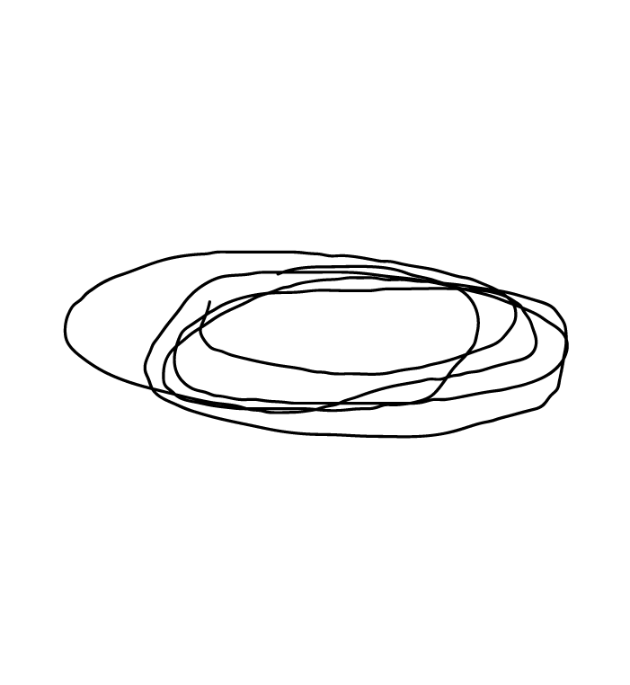
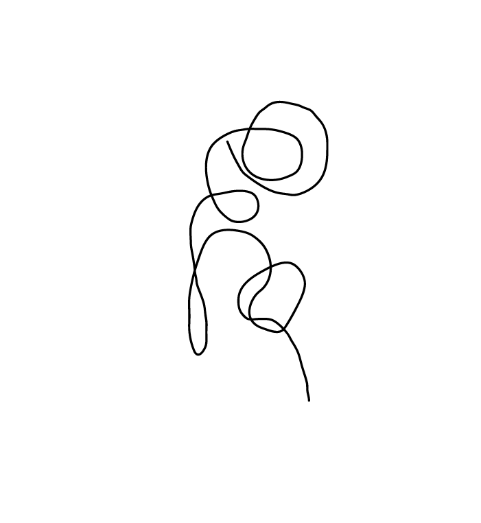
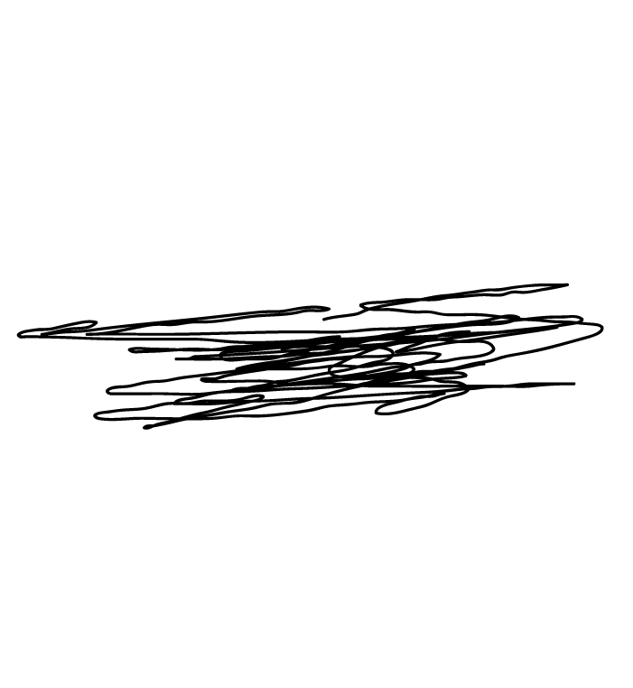

On Punctuation
By Gertrude Stein
There are some punctuations that are interesting and there are some punctuations that are not. Let us begin with the punctuations that are not. Of these the one but the first and the most the completely most uninteresting is the question mark. The question mark is alright when it is all alone when it is used as a brand on cattle or when it could be used in decoration but connected with writing it is completely entirely completely uninteresting. It is evident that is you ask a question you ask a question but anybody who can read at all knows when a question is a question as it is written in writing. Therefore I ask you therefore wherefore should one use the question mark. Beside it does not in its form go with ordinary printing and so it pleases neither the eye nor the ear and it is therefore like a noun, just an unnecessary name of something. A question is a question, anybody can know that a question is a question and so why add to it the question mark when it is already there when the question is already there in the writing. Therefore I never could bring myself to use a question mark, I always found it positively revolting, and now very few do use it. Exclamation marks have the same difficulty and also quotation marks, they are unnecessary, they are ugly, they spoil the line of the writing or the printing and anyway what is the use, if you do not know that a question is a question what is the use of its being a question. The same thing is true of a quotation. When I first began writing I found it simply impossible to use question marks and quotation marks and exclamation points and now anybody sees it that way. Perhaps some day they will see it some other way but not at any rate anybody can and does see it that way.
So there are the uninteresting things in punctuation uninteresting in a way that is perfectly obvious, and so we do not have to go any farther into that. There are besides dashes and dots, and these might be interesting spaces might be interesting. They might if one felt that way about them.
One other little punctuation mark one can have feelings about and that is the apostrophe for possession. Well feel as you like about that, I can see and I do see that for many that for some the possessive case apostrophe has a gentle tender insinuation that makes it very difficult to definitely decide to do without it. One does do without it, I do, I mostly always do, but I cannot deny that from time to time I feel myself having regrets and from time to time I put it in to make the possessive case. I absolutely do not like it and leaving it out I feel no regret, there it is unnecessary and not ornamental but inside a word and its s well perhaps, perhaps it does appeal by its weakness to your weakness. At least at any rate from time to time I do find myself letting it alone if it has come in and sometimes it has come in. I cannot positively deny but that I do from time to time let it come in.


